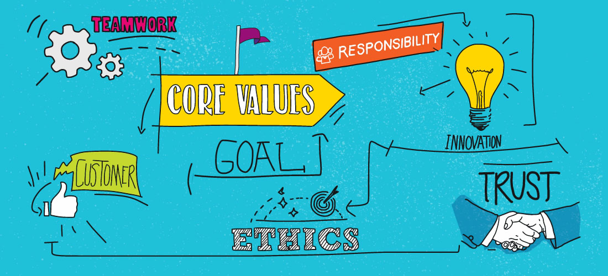

Identity, Values and Strengths Exploration
Explain a situation where you have had an ethical decision to make. Discuss how you weighed up the values involved in that decision, the decision you made, and the consequences of your action.
Making good ethical decisions requires a trained sensitivity to ethical issues and a practiced method for exploring the ethical aspects of a decision and weighing the considerations that should impact our choice of a course of action. It is essential for us to study how to make an ethical decision.
I also met a situation where I have to deal with this ethical problem. When I worked as a checkout staff in a retail store, I witnessed a staff taking cash from the till. At first, it looked just like changing over the till, but I decided to confront the staff anyway. The staff was actually taking money from the till, and I took the cash she had from the till and placed it back in the till and notified it to manager. We were able to resolve the issue by balancing the cash drawer and ensuring that particular employee was unable to commit theft from the company again.
Describe how your culture has influenced your values and identity.
Many cultural aspects influence the way we interact with other people, including national culture, gender culture, corporate culture and various communication styles.
As a Chinese, the national culture affects me a lot. My culture affects how I solve challenges and conflicts and how I conduct work. It also has an influence on my behavior. The core value of Chinese identity like harmony, benevolence, loyalty and hardworking. Harmony encompasses rationale, propriety, and compatibility.
I usually try properly coordinate different things by bringing them together in the appropriate manner. In the meanwhile, I always considered my family, friendships and social relationship based on benevolence. In addition, I think I am loyal as I am faithful to family, friends, company and society. I am a hardworking person like my parents to create a better life for the family.
Evaluate your strengths and limitations in terms of your learning and career development
My strengths are good time management, taking responsibility for my underlying goal and focus expert. I prefer to plan everything and set timelines and deadlines for my plans. In addition, my strong ethical principles don’t allow me to simply write off missteps with excuses and rationalizations.
My limitation is hard to say no to people whenever people ask me for help, I always say yes without assessing my workload and my schedule. However, I am aware of my weakness. I am mindful of it and try to improve it in the future.
Identify which of your strengths might help you in your learning journey and how they intersect with learning obstacles.
I think all both my strengths help me in my learning journey. As I am a focused learner, I usually pick up new technologies quickly and focus on them. In addition, I have good time management. I prefer to make a daily study plan and follow my timelines to finish tasks.
Share an example from your experience of where you were trying to work productively with others, but there was resistance or tension. Discuss the strategies you used at that time, how effective they were, and your reflections on what other strategies you would try now and why.
I was working as a design specialist in my team, and one new colleague was constantly late finishing tasks. As Christmas is coming, our store is super busy. I told the staff to work quickly and teach her how to arrange time properly.
Maybe my attitude is not properly and the staff felt angry although she followed my suggestions and then finished tasks on time. I think I am not her supervisor so she is not happy to follow my instructions.
Now, if I back to this situation again, I will try myself calmed down and will be asked her that should I help her rather than tell her some instructions to improve her speed. I think this strategy is easily accepted by a colleague.